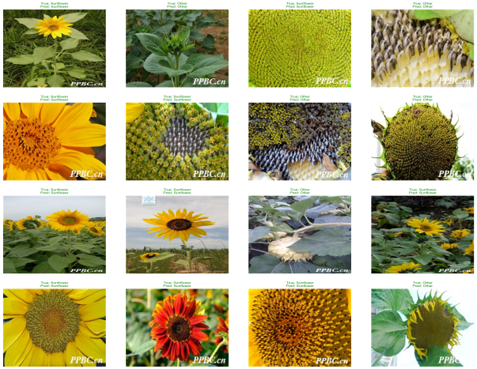
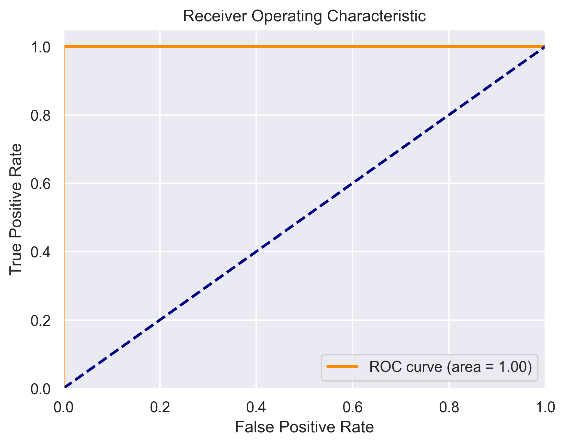
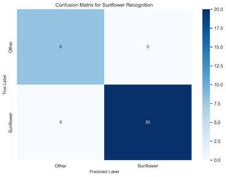
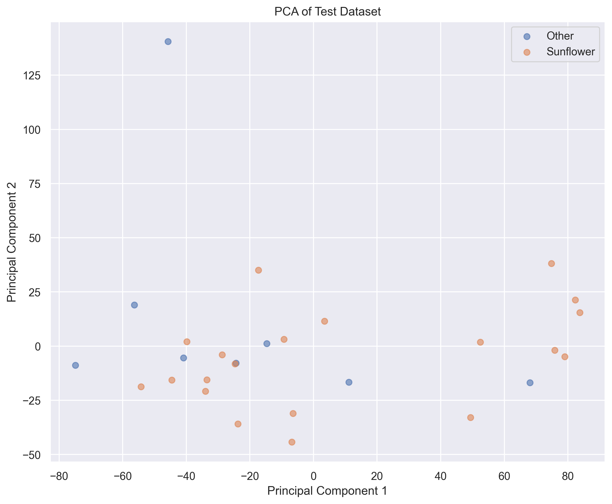

基于机器学习的智能植物授粉需求识别，优化授粉流程
本项目开发了一个基于计算机视觉和机器学习的系统，其能够在学习大量的植物图像后自动识别需要授粉的植物，从而优化授粉流程，提高农业自动化水平。
系统融合了先进的图像特征提取技术与多模型融合策略，在向日葵授粉识别任务中达到了 95%+ 的准确率，ROC曲线AUC值达到 1.00。

使用对比度增强、锐化、轻微模糊等方法提高图像质量，使模型更容易识别花朵特征。
提取HSV和LAB颜色空间的直方图，分析花朵的颜色分布，捕捉色彩差异。
使用HOG（方向梯度直方图）和LBP（局部二值模式）提取花朵的纹理信息。
计算花朵的面积、周长、长宽比、圆形度等几何特征，量化形态差异。
采用多尺度Canny边缘检测，分析花朵的轮廓清晰度，识别结构边界。
计算灰度图像的均值、标准差、偏度、峰度等统计量，全面描述图像分布。
以无人机给向日葵授粉为例，展示本系统的实际应用效果。通过多维度评估验证模型的可靠性与实用性。

曲线下面积（AUC）为1.00，表明该模型整体区分能力优越，能够正确区分植物是否需要无人机授粉，达到理想分类效果。

对角线数字为8和20，表明所有测试集中的图像都被正确分类，直观地展示了模型的准确性高达95%以上，几乎不存在误判。
随机选择16个测试样本展示预测结果，用颜色区分预测准确性——绿色为正确，红色为错误，直观展示模型在实际运用中的效果显著。

使用主成分分析(PCA)将高维特征降至2维可视化，直观展示特征空间中不同类别（向日葵/其他）的分布情况，验证特征提取的有效性。